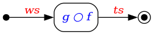
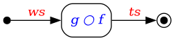

2.6. Data Flow¶
In Section 2.4, the example was given for creating tracks from wires.
The simplified expression for doing this was the chained application of two functions  and
and  such that:
such that:
where and are the wires and tracks, respectively.
An alternative representation to the equational form is a directed graph
![digraph {
rankdir=LR
node [shape="box", style="rounded"]
start [shape="point", width=0.1]
end [shape="point", width=0.1, peripheries=2]
f [label=<<i><font color="blue">f</font></i>>];
g [label=<<i><font color="blue">g</font></i>>];
start -> f [label=<<i><font color="red">ws</font></i>>]
f -> g [label=<<i><font color="darkgray">hs</font></i>>]
g -> end [label=<<i><font color="red">ts</font></i>>]
}](images/graphviz-c1663f770227d4196872962f7f4d67e042fe3886.png)
where the functions and are vertices or nodes and the data and are passed along arrows or edges that connect the nodes [1].
The arrows indicate the flow of the data (or data flow) through the graph.
Some observations:
The function
returns hits that are unlabeled in the equational form.
For the graph above, we explicitly label those hits as to emphasize that data are always passed along edges.
If, however, the hits are not needed by any other function in the graph, the two functions and can be replaced by their composition  
resulting in potential performance improvements in computational efficiency and program memory usage.
A directed graph can have no unterminated edges—i.e. an edge must have a source (the tail of the arrow) and a target (the head of the arrow). This means that whereas the equation does not need to specify where the wires originate (or where the tracks end up), such locations must be specified in the graph. Any node that has only outgoing edges is called a source (denoted by a solid dot), and any node that has only incoming edges is a sink (denoted by an encircled solid dot).
2.6.1. Data Flow with Sequences¶
As mentioned earlier in Section 2.5, processing sequences of data is a critical aspect of obtaining physics results.
The data-flow discussion in the previous section naturally maps to applying the functions and to elements of sequences. Specifically [2]:
Instead of the individual objects , , and being passed along the edges, the sequences , , and are passed.
The functions
and map to and , respectively.
![digraph {
rankdir=LR
node [shape="box", style="rounded"]
start [shape="point", width=0.1]
end [shape="point", width=0.1, peripheries=2]
f [label=<transform( <i><font color="blue">f</font></i> )>];
g [label=<transform( <i><font color="blue">g</font></i> )>];
start -> f [label=<<table cellpadding="1" border="0" cellborder="0">
<tr><td>[<i><font color="red">ws</font><sub>i</sub></i>]</td></tr>
</table>>]
f -> g [label=<<table cellpadding="1" border="0" cellborder="0">
<tr><td><font color="darkgray">[<i>hs<sub>i</sub></i>]</font></td></tr>
</table>>]
g -> end [label=<<table cellpadding="1" border="0" cellborder="0">
<tr><td>[<i><font color="red">ts</font><sub>i</sub></i>]</td></tr>
</table>>]
}](images/graphviz-c53146fa366e4e0c7cb0f02459bec03166329fd0.png)
The above graph does not specify an implementation—assuming and are pure functions (see Section 2.4.1), the same result is obtained if (a) full sequences are passed between the nodes, or (b) one element per sequence is passed at a time.
Whether option (a) or (b) is chosen as the processing implementation depends on the data and the overall constraints on the program.
Todo
Determine whether the choice between (a) and (b) can be decided in user code, by user configuration, or by something else.
One benefit to using a graph representation using data sequences and higher-order functions is the ability to easily express folds and unfolds. As an illustration, consider the calculation of a sum of squares for all integers from 1 through :
This calculation requires three separate steps:
an unfold called iota that, given an integer , generates a sequence of integers from 1 through ,
a transformation called square that squares each integer in the sequence, and
a fold called sum that sums all squared integers.
The data-flow graph of individual objects looks like:
![digraph {
rankdir=LR
node [shape="box", style="rounded"]
start [shape="point", width=0.1]
end [shape="point", width=0.1, peripheries=2]
iota [label=<<i><font color="blue">iota</font></i>>];
transform [label=<<i><font color="blue">square</font></i>>];
sum [label=<<i><font color="blue">sum</font></i>>];
start -> iota [label=<<table cellpadding="1" border="0" cellborder="0">
<tr><td><font color="red"><i>n</i></font></td></tr>
</table>>]
iota -> transform [label=<<table cellpadding="1" border="0" cellborder="0">
<tr><td><font color="red"><i>1</i></font></td></tr>
</table>>]
iota -> transform [label=<<table cellpadding="1" border="0" cellborder="0">
<tr><td><font color="red"><i>2</i></font></td></tr>
</table>>]
iota -> transform [label=<<font color="red">⋮</font>>, penwidth=0, arrowhead=none]
iota -> transform [label=<<table cellpadding="1" border="0" cellborder="0">
<tr><td><font color="red"><i>n</i></font></td></tr>
</table>>]
transform -> sum [label=<<table cellpadding="1" border="0" cellborder="0">
<tr><td><font color="red"><i>1</i></font></td></tr>
</table>>]
transform -> sum [label=<<table cellpadding="1" border="0" cellborder="0">
<tr><td><font color="red"><i>4</i></font></td></tr>
</table>>]
transform -> sum [label=<<font color="red">⋮</font>>, penwidth=0, arrowhead=none]
transform -> sum [label=<<table cellpadding="1" border="0" cellborder="0">
<tr><td><font color="red"><i>n<sup>2</sup></i></font></td></tr>
</table>>]
sum -> end [label=<<table cellpadding="1" border="0" cellborder="0">
<tr><td><font color="red"><i>S(n)</i></font></td></tr>
</table>>]
}](images/graphviz-e518047b64edfd01071f2132110e3c298dee0503.png)
where each number is passed along its own edge to the nodes performing the calculation. By adopting a sequence-based representation of the sum-of-squares problem, the data-flow graph is considerably simplified:
![digraph {
rankdir=LR
node [shape="box", style="rounded"]
start [shape="point", width=0.1]
end [shape="point", width=0.1, peripheries=2]
iota [label=<<i><font color="blue">iota</font></i>>];
transform [label=<transform(<i><font color="blue">square</font></i>)>];
sum [label=<<i><font color="blue">sum</font></i>>];
start -> iota [label=<<table cellpadding="1" border="0" cellborder="0">
<tr><td><font color="red"><i>n</i></font></td></tr>
</table>>]
iota -> transform [label=<<table cellpadding="1" border="0" cellborder="0">
<tr><td><font color="red">[<i>i</i>]</font></td></tr>
</table>>]
transform -> sum [label=<<table cellpadding="1" border="0" cellborder="0">
<tr><td><font color="red">[<i>i<sup>2</sup></i>]</font></td></tr>
</table>>]
sum -> end [label=<<table cellpadding="1" border="0" cellborder="0">
<tr><td><font color="red"><i>S(n)</i></font></td></tr>
</table>>]
}](images/graphviz-145025f1d1833d2a7bfcfbbaed5681d0ad54d8dd.png)
In addition, the topology of the sequence-based graph remains the same regardless of the value of ; the topology of the object-based graph becomes intractable as increases.
The vast majority of graphs included in this design document adopt the sequence-based data-flow representation.
Footnotes